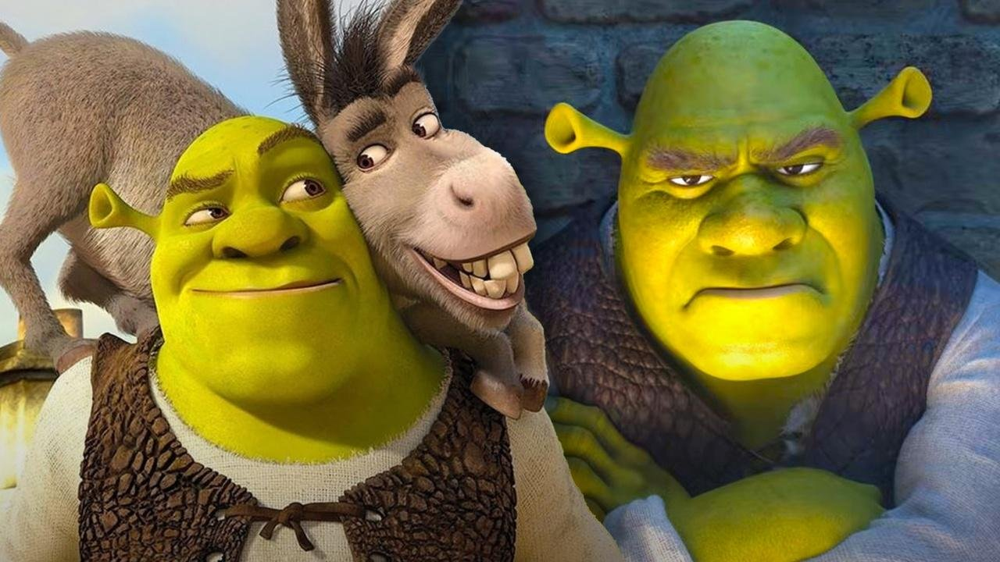
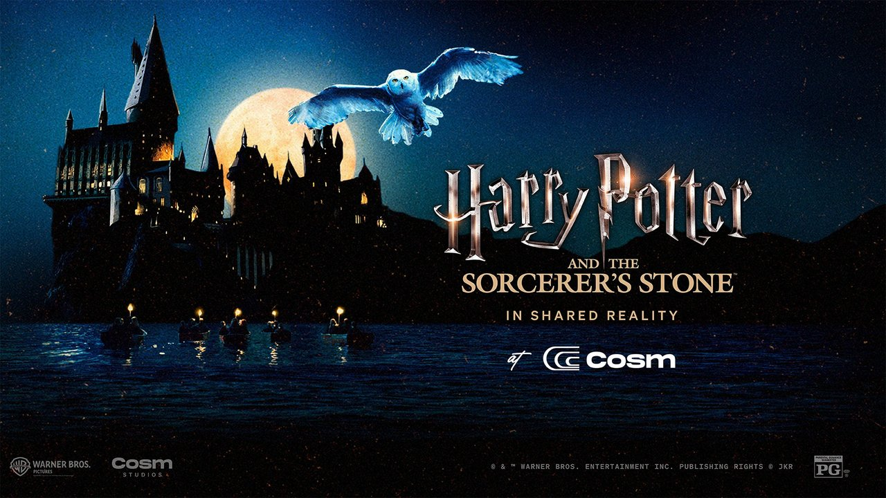

The June teaser drew backlash sharp enough that comments got switched off. It wasn't nostalgia. It was texture.
Sand the grime, pores and weight off a character and the eye clocks it instantly - it reads synthetic. The internet has a name for that now: "AI slop." The redesign chased clean and lost the hand-made friction that made the original feel alive.
Polish and finish are not the same thing. Finish is the deliberate roughness that tells your senses something is real - the scuff, the fingerprint, the imperfect edge. Remove it and you remove belief.
Same month, a dome in Inglewood restaged Harry Potter in shared reality - and kept every texture: dust in the light, weight in the stone. The surface did the convincing. That's the difference between rendering an image and rendering a place.

Have something impossible in mind?
If a pitch on your desk needs real-time 3D, projection, or AR under your own brand, that's the layer we build. Reply.
Touch it →